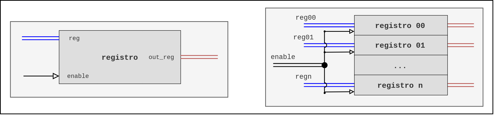

Microprocesador - Stage 1
ALU + Registros ACM, ACC y RD - Descripción general
Esta primer etapa de desarrollo del microprocesador de 4 bits está compuesta por los siguientes elementos: un registro de datos RD, el registro temporal ACC, el registro acumulador ACM y una ALU de 16 operaciones de 4 bits. El propósito de este módulo del microprocesador es realizar la carga de instrucción en la ALU, la carga de los datos desde memoria en el registro RD y finalmente la carga del resultado de la operación (salida de la ALU) tanto en el registro ACC como en el ACM. Siguiendo el esquema general del microprocesador observamos que las acciones antes mencionadas se realizan en sincronía con las 4 primeras señales del GCM (Generador de ciclo) del microprocesador, lo cual se toma en consideración para el diseño de este primer módulo.
Los registros utilizados consisten en un arreglo de flip flops (4 o 5 dependiendo el tamaño de la palabra a almacenar) tipo D. Dado que el registro RD debe almacenar dos datos leídos desde memoria, se utiliza un banco de registros de 2x4 (elementos x tamaño de elementos en bits). Una de las salidas de dicho banco va directamente a la ALU y la otro entra en un multiplexor de 2 a 1, en el cual se hace la selección del segundo dato a operar, entre el almacenado en el registro B del banco RD y el almacenado en el registro ACM. Una vez en la ALU se realiza la operación entre los datos y el resultado, tanto magnitud (4 bits) como acarreo/signo (1 bit), se cargan en el registro ACC y en el ACM, ambos, registros de 5 bits.
El despliegue de la información se hace en un arreglo de 5 displays de 7 segmentos los cuales muestran: dato a, dato b, instrucción actual, acarreo/signo y resultado (magnitud). Para ello se implementa un decodificador de 4 bits para cada de display de 7 segmentos. Las primeras tres señales de los primeros tres displays, se toman directamente del bus de entrada al módulo, y tanto el acarreo como el valor de salida de la operación se toman desde las salidas del módulo.
Se ha denominado a este primer módulo del microprocesador micro_stage1 y el diagrama a bloques correspondiente se muestra a continuación.

Fig.1. Diagrama micro_stage1: ALU + Registros ACM, ACC y RD
El diagrama es una representación del nivel mas alto del módulo, en este se denotan los bloques, señales y buses que lo conforman. Se debe tener en consideración que los elementos externos al micro_stage1 son los necesarios para montar un testbench, es decir, no son parte de la estructura final del módulo, su función es simplemente emular los demás dispositivos que dentro del microprocesador y proveer un medio de visualización del funcionamiento de esta primera etapa.
ALU 16 operaciones
La unidad de procesamiento se divide en dos sub-unidades: la lógica y la aritmética. Estas dos unidades se han considerado como dos bloques independientes arith_u y logic_u. Cada sub-unidad es capaz de realizar 8 operaciones cada una, sobre uno o los dos operandos. La selección de la unidad y de la operación se hace en función de los valores de los campos recibidos en la instrucción. Esta instrucción es un conjunto de bits que se reciben desde el codificador de instrucción, elemento de una segunda etapa del microprocesador, por lo cual para pruebas y depuración de este módulo se sustituye dicho conjunto de bits provenientes del decodificador por un vector de 5 bits instrcn.

Fig. 2. Diagrama ALU 16 operaciones.
| logic_u | arith_u |
|---|---|
| La unidad lógica se compone de 4 bloques de operadores lógicos de 1 bit, cada uno de estos operadores realiza la operación bit a bit de las entradas. El acarreo de salida en esta unidad se establece en 0. | La unidad aritmética de la ALU se compone de un bloque de control en el que en función de la operación recibida como instrucción se modifican los datos de entrada para posteriormente enviarse a un sumador completo de 4 bits. |
Instrucciones
El formato de las instrucciones de la ALU es una palabra de 5 bits la cual se divide en campos como se muestra a continuación:
xxxxxxxxxxbit : 4 3 2-1 0señal : [regmux_sel] [unit_sel] [op_sel] [carry_in]
- regmux_sel: El selector de registro del segundo operando se conecta al multiplexor y mediante este se elige el segundo operando que entra a la ALU, entre el dato de entrada B (rdb_bus) y el valor almacenado en el acumulador (acm_bus).
- unit_sel: El selector de unidad determina si se realiza una operación aritmética (0) o lógica (1) sobre los operandos.
- op_sel & carry_in: La instrucción de operación concatenada con el acarreo de entrada ci determina cual de las 8 operaciones en cada una de las unidades se va a realizar.
Tabla de instrucciones
| unit_sel | op_sel & carry_in | hex | operación |
|---|---|---|---|
| 0 | 000 | 0 | suma |
| 0 | 001 | 1 | resta |
| 0 | 010 | 2 | transferencia A |
| 0 | 011 | 3 | incremento A |
| 0 | 100 | 4 | transferencia B |
| 0 | 101 | 5 | incremento B |
| 0 | 110 | 6 | decremento A |
| 0 | 111 | 7 | decremento B |
| 1 | 000 | 8 | AND |
| 1 | 001 | 9 | NAND |
| 1 | 010 | A | OR |
| 1 | 011 | B | NOR |
| 1 | 100 | C | XOR |
| 1 | 101 | D | XNOR |
| 1 | 110 | E | BUFFER A |
| 1 | 111 | F | NOT A |
Registros
Cada uno de los registros utilizados en este módulo cuenta con un puerto de activación enable, un bus de entrada y otro de salida de 4 ó 5 bits. El banco de registros es un arreglo de n registros, y la activación de estos se hace mediante una señal de bits, donde el bit 0 corresponde a la señal enable del registro 0, el bit 1 corresponde a la señal enable del registro 1 y de manera sucesiva hasta el bit n-1.

Fig.3. Diagrama de registros y banco de registros.
Implementación del diseño
Para la implementación del proyecto se utilizó el software de análisis y síntesis de HDL ISE Design Suite de Xilinx y el simulador del lenguaje VHDL GHDL.
GHDL: Es un simulador de lenguaje VHDL de código abierto. Este permite la "compilación" (síntesis) y ejecución de código VHDL (simulación) en un equipo de cómputo y en conjunto con
GTKWavela visualización del comportamiento de los modelos de manera gráfica.
Paquetes
La organización de los archivos VHD del proyecto se hizo en forma de paquetes, clasificados en 4 categorías: alu, basic, memory y micro, estos paquetes se integran a la librería por defecto work. A cada archivo de paquete se le agrega el sufijo _devs y la extensión de estos es .vhd. Los archivos se ubican en el directorio source. Dentro del proyecto de ISE se agregan los archivos fuente en forma de referencia, es decir, no son copiados al directorio de este.
En el paquete basic se organizan dispositivos de lógica combinacional tales como sumadores, multiplexores, comparadores, decodificadores, etc. El paquete memory contiene las descripciones de dispositivos de memoria, flip-flops, registros, memorias, etc. Dentro del paquete alu se definen los bloques que componen la ALU: la unidad lógica logic_u, la unidad aritmética arith_u, y el control de la unidad aritmética ctrl_arith_u. El paquete micro contiene la declaración de componentes de los módulos/etapas que integran la totalidad del microprocesador: micro_stage1, micro_stage2y el GMC.
Árbol de paquetes
El siguiente árbol muestra los paquetes y los elementos declarados dentro de estos. Se considera a la librería workigual al directorito source del proyecto. La distribución de los directorios y carpetas en disco se hace como lo representa el árbol.
xxxxxxxxxxwork___________________|_____________________/ | | \alu basic memory micro/ | | |alu_16op adder4bit bank241 micro_stage1arith_u full_adder reg04 micro_stage2ctrl_arith_u comp4bit reg05 GMClogic_u comp2bit ff0logic_op_1bitmux241deco47segconta203conta305conta40Fmux643dmux673dmux412
Nota: Las entidades de todos los dispositivos utilizados en el diseño y pruebas del microprocesador se pueden encontrar en el Anexo A. La descripción de la nomenclatura utilizada para nombrar ciertos dispositivos se encuentra en el Anexo B.
Formato de archivos
El contenido de los archivos de paquetes es únicamente la declaración de componentes de cada dispositivo tal cual se declara la entidad. Un archivo de paquete tiene el siguiente formato:
xxxxxxxxxxlibrary ieee;use ieee.std_logic_1164.all;package paquete is component dispositivo1 is port( puerto1: [in|out] std_logic...; puerto2: [in|out] std_logic...; ... ); end component;end package;La instanciación de componentes se hace mediante mapeo de puertos por posición, es decir se asignan las señales al componente en el orden en que son declarados dentro del paquete. El formato de estos archivos se asemeja al siguiente:
xxxxxxxxxxlibrary ieee;use ieee.std_logic_1164.all;use work.paquete.dispositivo1;entity bloque1 is port( puerto1_bloque: [in|out] std_logic...; puerto2_bloque: [in|out] std_logic...; ... );end entity;architecture behavioral of bloque1 is signal señal1_dispositivo: std_logic...; signal señal2_dispositivo: std_logic...; ...begin -- Ejemplo de manipulación de señal señal2_dispositivo <= not(señal2_dispositivo1) after 2 ns; instancia1_dispositivo: dispositivo1 port map (señal1_dispositivo, señal2_dispositivo, ...); -- Ejemplo de proceso process(puerto_bloque1) if(puerto_bloque1='1') then ... end if; end process;end architecture;Niveles de diseño
La descripción de los circuitos que integran el proyecto se hace manera estructural, por ende es posible identificar una jerarquía de niveles de diseño y de manera conveniente establecer un punto de observación del funcionamiento del módulo a diferentes escalas. Es decir, la descripción estructural nos permite situarnos en algún dispositivo en particular y observar tanto su comportamiento como el de los dispositivos en niveles inferiores. Para efectos de esta etapa, se define el módulo micro_stage1como el nivel superior inicial y a partir de este se derivan los niveles subsecuentes haciendo uso de una estructura de árbol.
Árbol de instancias
Representa de forma jerárquica los niveles de diseño y denota las instancias que se hacen en cada componente que integra el módulo. Cada hoja se compone del nombre de la instancia seguido de su tipo. Como se observa el dispositivo con el mayor número de instancias y niveles inferiores es la alu.
xxxxxxxxxx6 micro_stage1__________________________________|______________________________/ | | | \5 rd:bank241 alu:alu_16op acm:reg05 acc:reg05 reg_mux:mux241| | | |4 reg[00-01]_block:reg04 | ff[4-0]_block:ff0 ff[4-0]_block:ff0______|_________________________________________/ \3 arithmetic_unit:arith_u logic_unit:logic_u/ \ |2 arithmetic_control:ctrl_arith_u full_adder_4bit:adder4bit logic_unit_[0-3]:logic_op_1bit| |1 comparator:comp4bit adder_[a-d]:full_adder|0 msb:comp2bitlsb:comp2bit
Propagación de ALU
Al ser el sumador de 4 bits el componente fundamental de la unidad aritmética, la propagación de la señal de salida y por ende el resultado de operación atraviesa diferentes dispositivos, la siguiente tabla muestra dicha ruta de abajo a arriba.
| Dispositivo | Instanciado en | Señal de acarreo | Señal de salida |
|---|---|---|---|
| full_adder | adder4bit | co | s |
| adder4bit | arith_u | co | s |
| arith_u | alu_16op | arith_unit_coutput | arith_unit_output |
| alu_16op | micro_stage1 | carry_out | alu_bus |